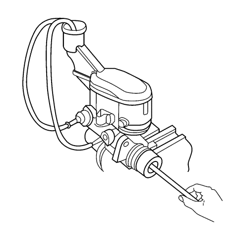

Advertencia: Consulte Advertencia de líquido de frenos irritante en la sección Prólogo
Precaución: Consulte Advertencia sobre los efectos del líquido de frenos sobre la pintura y los componentes eléctricos en la sección Prólogo

- Monte la brida de fijación del cilindro maestro de freno en un tornillo de banco, de manera que se pueda tener acceso a la parte trasera del pistón primario.
- Desmonte la tapa y el diafragma del depósito del cilindro maestro.
- Monte herrajes adecuados en las tubuladuras del cilindro maestro que concuerden con el tipo de asiento rebordeado requerido y que sirvan para el acoplamiento del tubo flexible.
- Monte tubos flexibles transparentes en los herrajes instalados en las tubuladuras del cilindro maestro, y dirija los tubos al depósito del cilindro maestro.
- Rellene el depósito del cilindro maestro de freno hasta el nivel máximo de llenado, con líquido de frenos procedente de una botella de líquido de frenos limpia y sellada. Consultar Llenado del depósito acumulador de cilindro maestro .
- Asegúrese de que los extremos de los tubos transparentes que van hacia el depósito del cilindro maestro están completamente sumergidos en el líquido de frenos.
- Utilizando una herramienta lisa de punta redondeada, pulse y suelte el pistón primario hasta su recorrido máximo, una profundidad de unos 25 mm (1 pulg.) varias veces. Observe el flujo del líquido proveniente de las tubuladuras.
A medida que el aire se purgue de los pistones primario y secundario, el esfuerzo requerido para pulsar el pistón primario aumentará y la cantidad de recorrido disminuirá.
- Continúe pulsando y soltando el pistón primario hasta que el líquido fluya libremente desde las tubuladuras sin que se vean burbujas de aire.
- Desmonte los tubos flexibles transparentes del depósito del cilindro maestro.
- Monte la tapa y el diafragma del depósito del cilindro maestro.
- Desmonte los herrajes con los tubos flexibles transparentes de las tubuladuras del cilindro maestro. Envuelva el cilindro maestro con un trapo limpio del taller para evitar que se derrame líquido de frenos.
- Desmonte el cilindro maestro, del tornillo de banco.